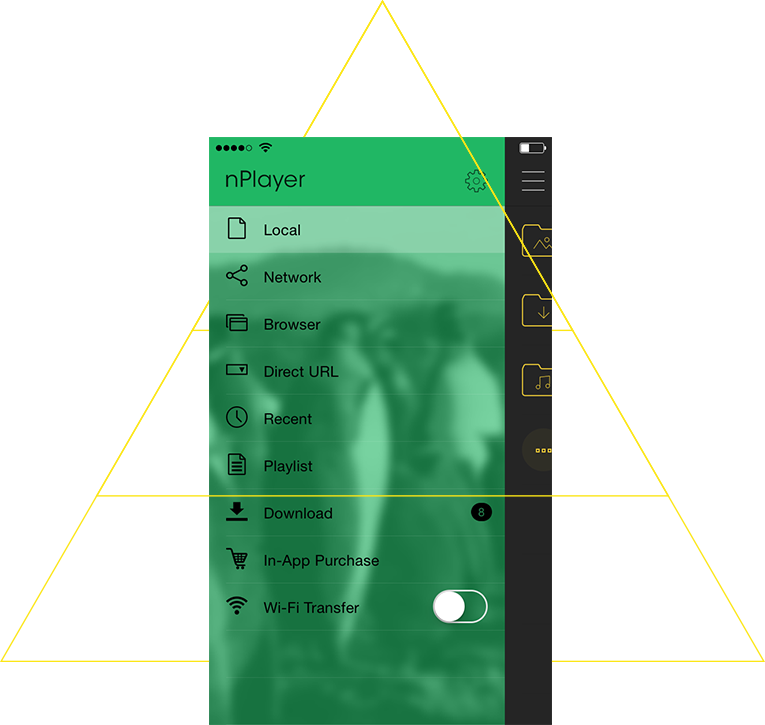
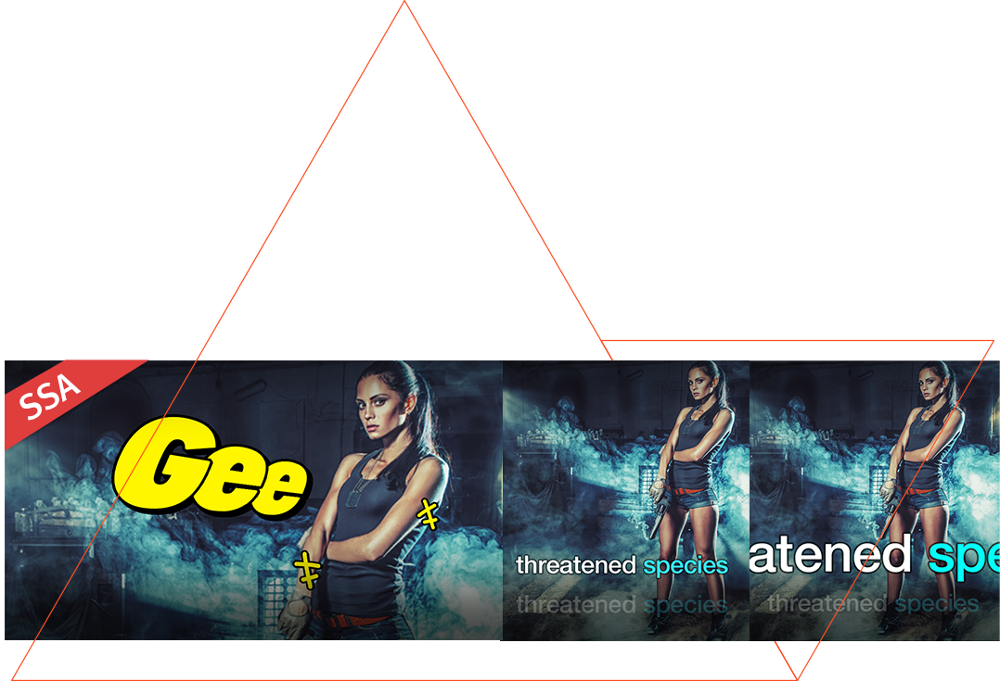

加班到凌晨的蓝光电影夜：我用 nPlayer 把收藏的 REMUX 看爽了
深夜回到家，手机里躺着那部收藏很久的蓝光 REMUX，但每次打开都被多语言音轨字幕切换和画面细节糊一脸。直到装了 nPlayer，才发现播放器可以这么顺手。
上周四有个紧急需求改到凌晨一点半。钥匙插进门锁的那一刻我整个人都瘫了——脑子嗡的，眼睛发花，只想赶紧躺平。但躺平之前有件事必须先做：把那部存了快三个月的《星际穿越》REMUX 给看了。
没错，就是那部 80 多 G、含七条音轨、四条字幕的蓝光原盘。当初下载它就是为了在手机上好好看一遍，但自从把文件塞进手机，我就打开过三次，每次都半途而废。原因很简单：我受够了每次打开都要手动切音轨和字幕。
那个让人抓狂的多语言噩梦
你知道蓝光 REMUX 的音轨字幕有多丰富吗？国语、粤语、英语、日语、韩语……国语字幕还有简体和繁体两版。传统播放器打开这种文件，默认给你选个什么法国音轨配西班牙字幕，我每次都得在播放界面翻来翻去找半天——先找设置按钮，再进音轨选项，再确认是第七个，然后出来进字幕选项，又得翻一遍。
更烦的是下一集（或者关掉重开）它又不记着我选了什么，每次都从第一条音轨重新开始。这种重复操作在精神疲惫的时候特别折磨人，本来想看电影放松，结果越看越火。
那天下班路上在地铁里跟朋友吐槽，刚好他也在用安卓手机，直接甩给我一个链接：去试试 nPlayer官网。
第一次打开 nPlayer：设置语言偏好只花了三十秒
从 官方下载 装完打开后，回到家洗完澡我先没急着点 REMUX 文件，而是进了设置。看到「语言偏好」那一项就点进去了——里面清清楚楚分成了「首选音轨语言」和「首选字幕语言」两个独立设置。
选语言的时候让我意外的是，它不是给个下拉菜单让我翻找，而是让我填 ISO 语言代码。我对着旁边那张代码表（后来才知道 nPlayer文档 里有完整对照表），首选音轨填了 chi，首选字幕填了 chi——两个都是中文。
等等，万一中文音轨找不到呢？nPlayer 支持多语言备选，用逗号隔开就行。我把音轨改成了 chi,eng，意思是优先中文、找不到就用英文。字幕也加了个 eng 兜底。
首选音轨语言: chi,eng
首选字幕语言: chi,eng保存，退出。然后才去找那个 80 多 G 的 REMUX 文件。
打开的瞬间我愣了一下——它直接就播了，而且是中文音轨配中文字幕。我甚至没点任何选项。我还特意退出来重新点了一次同一个文件，还是自动选对了。又换了另一个 REMUX 试试，同样是中文音轨字幕自动就位。
这一个设置值了我前三个月的所有手动切换时间。
缩放与平移：第一次看清了库珀的表情
电影播到米勒星球那段，海浪拍过来的时候我一直想看马修·麦康纳脸上的表情变化，但手机屏幕小，远景里人脸只有指甲盖大。之前用别的播放器也见过有缩放功能，但操作特别别扭，要么是单指双击要么是找设置里的缩放按钮。
nPlayer 的缩放逻辑出乎意料地直接——播放界面双指捏合就是缩放，放大后单指拖动就能平移画面。没有任何按钮，完全是系统级的手势直觉。
我把画面拉到最大，手指按住屏幕把画面往右下拖了两厘米——库珀那张满是惊愕和恐惧的脸突然占满了屏幕，连他额头的汗珠和嘴角抽动的细纹都看得一清二楚。原来那一段他不只是喊"记住"，他的表情里还藏着很多层情绪。

看电影从来都是用眼睛"看"，但用手势捏合着放大、拖动着查看的那一刻，我感觉像是亲手捧起了一块电影画面。这种触摸带来的参与感，比单纯看要投入得多。
播放列表：今晚看不完的 REMUX 怎么办
电影播到一个小时的时候我眼皮已经打架了，决定先暂停去睡。但下次打开的时候，我不想再去文件夹里翻来翻去找那个文件了——而且我手机里还有另外五部没看完的 REMUX 和十几集存着的美剧，每次打开都得先在几百个文件里定位目标。
nPlayer 的播放列表功能刚好解决这个痛点。它不是简单的文件夹，而是一个文件引用列表——同一个视频文件可以同时出现在多个播放列表里，从列表里移除不会物理删除原文件。
我建了两个列表：「正在追的电影」和「正在追的剧」。建列表的方式很简单，在本地文件列表里找到视频，长按，选「添加到播放列表」，选中已有列表或者新建一个。想把整季美剧一次性加进去？直接多选文件，批量添加就行。

列表里的顺序还能手动拖——我把《星际穿越》放在最上面，然后是《信条》，再是几部老片。下次打开 nPlayer 直接进播放列表，点播放就从上次暂停的位置续上。
凌晨的尾声：我开始用 Chromecast 投屏了
看完电影我没立刻关手机，而是把刚才用的那些功能又试了一遍。投屏功能让我特别惊喜——我家客厅电视自带 Chromecast，之前从来没试过用手机投 REMUX 到电视上看，总觉得高码率视频会卡死或者音画不同步。
nPlayer 的 Chromecast 流程意外地顺畅：播放视频时点屏幕显示控制栏，找到那个方块加 Wi-Fi 波形的投屏图标，点一下就能搜到客厅电视，选它就投过去。手机变成遥控器，可以在手机上点暂停、快进、切字幕，画面稳定音画同步。
唯一的小限制是 Chromecast 协议不支持 DTS 编码的 Bitstream，但我那部 REMUX 用的是 Dolby AC3，直接支持，没遇到什么问题。如果你的视频用了 DTS，nPlayer 会自动解码成 PCM 再推送，音质会有一点损失但至少能正常看。
那一夜之后
现在距离那个加班的周四已经过去快两周了。那部《星际穿越》我在手机上看完了，后来又用 Chromecast 投到电视上重看了一遍。设置里的语言偏好现在还保持着 chi,eng，再也没手动切过音轨字幕。播放列表里已经有七八部电影和两整季的美剧，每次打开 nPlayer 直接进列表，点哪个播哪个。
我有时候觉得一个好的播放器就应该这样：它不是用来炫耀功能清单的，而是用来让你忘记"播放器"这件事本身的。你打开它，它就帮你把字幕调好、音轨选好、播放位置续上，让你直接进入电影。遇到想细看的画面，双指捏合一下就放大了，想投到大屏，点一下投屏图标就到电视上了。
我对播放器的要求其实很朴素：能播、顺手、不折腾。nPlayer 在这三点上都做到了，而且做到了让我愿意主动把它留在手机主屏幕上。如果你也是那种手机里存了一堆 REMUX 但打开就切音轨切到烦躁的人，真的可以试试。这个项目的开源资料我在三个地方都留了备份，GitHub 上有原始仓库，国内访问顺手的时候去 Gitee 或 GitCode 也能找到，文档维护的地址是 GitHub。